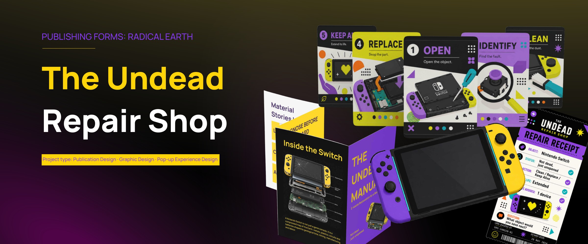
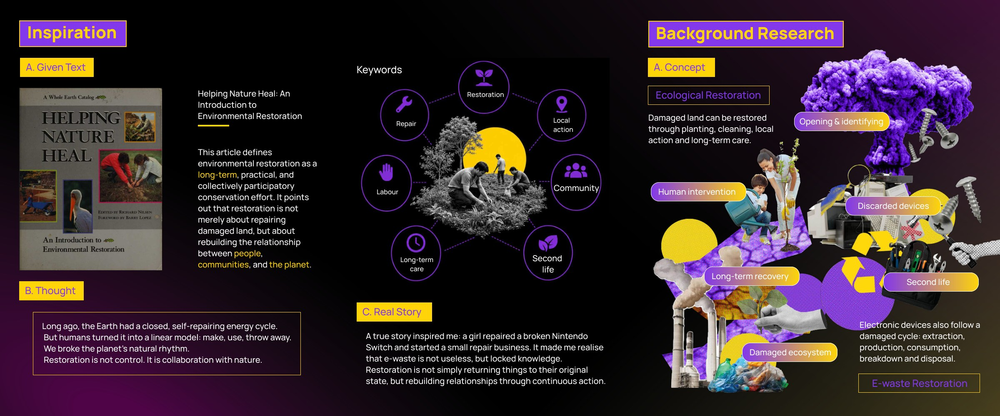
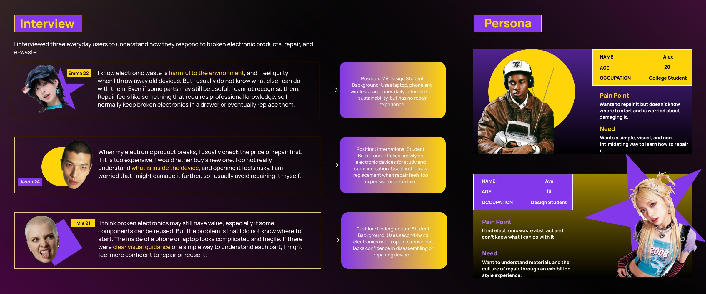
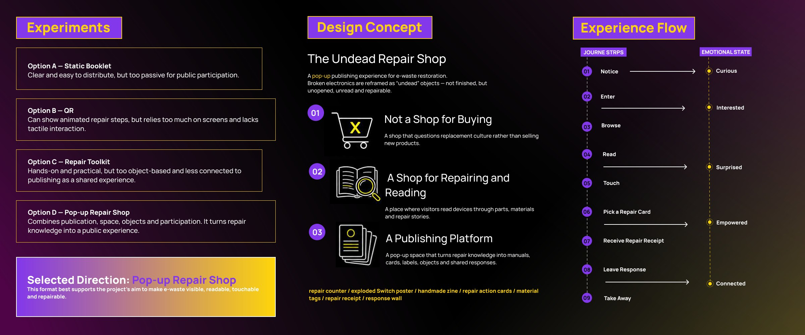
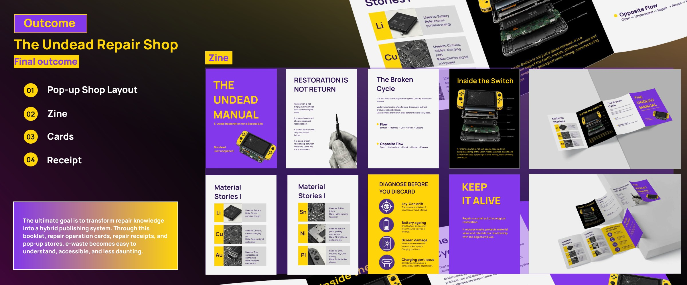
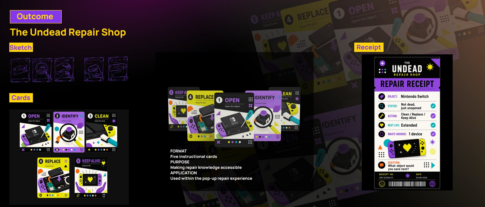
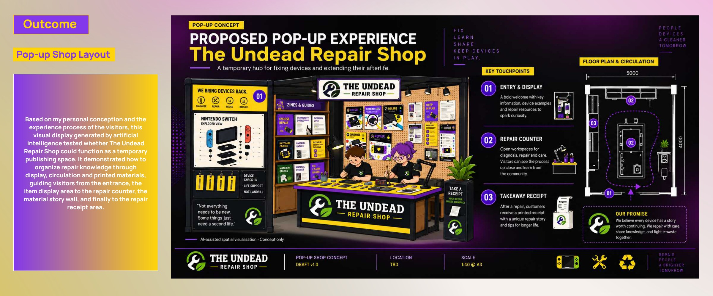

The Undead Repair Shop
A publishing system for giving electronics a second life: a zine, instructional cards, repair receipts and a proposed pop-up repair space. The project makes material stories and repair knowledge tangible.






